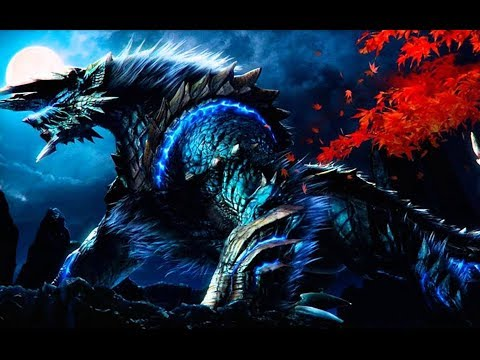

首頁
迅龍
雷狼龍
電龍
雷狼龍

神王牙
牙龍種(龍盤目 四腳亞目 雷狼龍上科 神王牙科)
稱號 無雙的狩人
別名 雷狼龍
生態
屬於近年成立的牙龍種 因後述生態的原因 被稱為「雷狼龍」
身體覆蓋著青色的鱗片 頭部與背面 手腕部並排著黃色的甲殼
然後是以腹部與頸部為中心生長的白色體毛為特徵
為了可以在陡峭的山上移動 持有著強韌且發達的四肢
特別是前腳有著強韌的筋肉 持有著不尋常的臂力
爪子也有著極度銳利的形狀 成為對獵物或外敵一擊必殺的強力武器
身軀雖然很大 但會利用大翻身來進行背後攻擊 且也會慢慢移動來做突然襲擊
當被認為是突擊的攻擊會接著進行別的攻擊 比起外觀的還要敏捷且快速
發達的長長尾巴 有著無數的甲殼並排著
不只是維持巨體的平衡 戰鬥時也會當成武器積極地運用
從口中看上去 有著銳利的牙齒 可以想像到牠是肉食性
主要是獵食草食龍(像副節龍那隻)與精靈鹿作為食物
特別喜歡獵食丸鳥 對於牠們會更積極的襲擊
一部分身體覆蓋的黃色甲殼是蓄電殼 體毛被稱為帶電毛
看起來像是雷電形狀的蓄電殼 有著會產生電力的特殊脂質
產生出的電力在帶電毛中儲蓄 變得更加增幅
但是 難以產生出一隻雷狼龍攻擊時的所需要的電力
放電之類的攻擊基本上不會使用
作為代替的是 自己所產生出的電力 會與周圍飛行的雷光蟲分享
有著讓雷光蟲活性化的能力(這個被活性化的雷光蟲 被稱為「超電雷光蟲」)
然後利用活性化後的雷光蟲電力
可以讓超過自己發電力的限制 讓超大量的電力能源寄宿在身上
當電力到達最大限制的時候 為了提高放電能力 會向天空咆哮
就像信號一樣 角與蓄電殼會往上展開 全身放出雷光
這種姿態的雷狼龍 被稱為「超帯電状態」
為了從蓄電殼的脂質進行放電 背面會發出青白的光
超帶電狀態的雷狼龍 據說其誇張的電力與海龍(基亞庫魯斯)同等
也被證實能發揮出與落雷匹敵的恐怖放電能力
此外 雖然原本就能把超過限制的電力能量時常纏繞在身上的狀態
因青色鱗片有著絕緣性 自己並不會對電力觸電
但進入超帶電狀態的雷狼龍會把甲殼展開 單純防守的時候會比平常還要弱
但是 相對的是攻擊力與敏捷性會飛躍性的上升 並不會看到疲勞 反而會更快速的進行攻擊
前述所說的鉤爪 在進入超帶電狀態時 側面重疊的兩根鉤爪會展開
變成更加方便攻擊的姿態 總而言之會比平常時的戰鬥能力還要高
此外 當在超帶電狀態時還是會感到危險的強敵出現的話
進行更加強力的咆哮轟鳴 同時蓄電殼與帶電毛同時發出蒼白的雷光
會開始進行更加激烈的攻擊
一旦往雷狼龍聚集的雷光蟲 是不太可能會讓自己從雷狼龍身上脫離
因為雷狼龍非常喜愛對雷光蟲是天敵的丸鳥
雷光蟲們透過聚集在雷狼龍身上 大家的安全性會更高
一方面 雷狼龍只要有一定數量的雷光蟲存在 便能維持在超帶電狀態
也就是 雷狼龍對雷狼龍自己 雷光蟲對雷光蟲之間
兩者有著互利共生的關係
但是 如前述所說 雷光蟲並不會自己從雷狼龍身上離開
可利用攻擊時的衝擊驅趕 利用蟲網來直接從雷狼龍身上奪取
也有存在著其他從雷狼龍身上引開雷光蟲的手段
因為這些因素 讓一定數量的雷光蟲從雷狼龍身上離開的話
就不能維持在超帶電狀態 在甲殼閉合的同時會回到正常狀態
另外 當雷狼龍死亡的時候 雷光蟲當然也會一同飛散
在後述的事件發生之前 是個非常稀有的魔物
到了在公會中的紀錄中 只有名子存在的程度
以及「貌似是肉食性」「持有著強力的放電能力」
「被奇妙的球狀光芒 無數的包圍著」等等這些不明確的情報
雖然根據村民的目擊證嚴 也存在於ユクモ地區的溪流深處
但其生態詳細基本上完全未知
當時的ユクモ村 有殘留著「很久之前 有一位獵人挑戰過牠」的故事
會變成有許多謎團的魔物的理由 是因為雷狼龍的棲息地
因有著成群養育孩子的習慣 只在離人類很遠的溪流深處才能見到其姿態的雷狼龍
本來原是幾乎不會被人類看到的魔物
因此 生態研究幾乎沒有進行
順帶一題 幼體與成體比較起來 有著大多數的帶電毛 因此有著白色外觀且會發光
被認為是為了要保護還未發達的蓄電殼的原因
但是 溪流深處因靈峰附近的古龍*1接近 狀況完全改變
為了要擴張靈峰的領土 有一部分的個體被古龍追趕
當到了山腳下的溪流時 就這樣定居了下來
因為這原因 溪流附近持續傳出有雷狼龍的目擊情報
而且還開始對溪流附近的 ユクモ村的林業造成了巨大損失
最終公會掌握了正確的生態 ユクモ村的村長為了要討伐雷狼龍 而雇用了專屬獵人並運送過去
順帶一題 這個時期的前後 ユクモ地區以外的目擊情報也陸續傳出
往原生林 孤島 冰海移住的個體都有目擊情報
在天空山 遺群嶺等等與靈峰相似的環境下 生活的個體存在也被確認
超帶電狀態的戰鬥能力不用說 平時的運動能力也相當可觀
有一段時期 把為了討伐而出發的獵人們都碾碎過
「是人類無法敵過的魔物」被這樣說 被賦予「無雙的狩人」的二名
被稱為「森林之王」的雷狼龍 被當作在自然界中也是有相當程度的強者而認識
如果雷狼龍在森林中移動的話 路上的小型與中型魔物一看到便會馬上逃跑
即使在戰鬥時 也會像是在測量對手一樣 不斷地用眼睛觀察
在其他魔物身上不太容易看到 能看到就像王者一樣威風堂堂的站立行為
被評價為「有著風格的大型魔物」
在許多和平的村子裡 被其強大的外表所吸引的小孩相當多
金雷公
神王牙
牙龍種(龍盤目 四腳亞目 雷狼龍上科 神王牙科)
別名 金雷公雷狼龍
生態
雷狼龍(神王牙)因為其特異性而被賦予二名的個體
”如果咆哮的話 能操控千光 放出萬雷”
在某個地方的傳說這樣說著 黃金的雷光在身上纏繞著的「雷狼龍的王」
因為傳說的一行文 獵人公會以≪金雷公≫稱呼著
能使人目眩的金黃色光輝體毛 與異常發達的豪壯右角為特徵
寄宿著與通常種不同次元規模的巨大雷屬性能量
產生壓倒性存在感的黃金雷光在全身流動著
對付外敵時會利用溢出的雷光來使用猛烈的攻擊
發射在地面滯留的雷彈 角纏上膨大的雷光來攻擊
使用著以前的個體從未用過的戰術
當金雷公揮舞時 狩獵場會整個包覆著令人暈眩的光芒
此外 那光輝會使金雷公死亡 一部分的素材被剝取之後沒多久就會消失
素材會持續發出啪機啪機的聲音 同時會持續放電 再取下時必須要特別注意
平時就維持在超帶電狀態是其特徵
維持超帶電狀態的能力甚至凌駕於通常種
不管怎麼樣的攻擊看起來都不會回到正常狀態的報告著
因此 並沒有會陷入疲勞狀態而露出空隙的時候
但是值得注意的是超帶電狀態 與更多雷光蟲聚集的體毛與爪子都散發著黃金的光輝
纏繞著金色雷光的真帯電状態是一個轉變點
這個狀態的金雷公 前腳叩擊的同時會有落雷的雷擊產生
發揮出比超帶電狀態還超過的戰鬥能力 對外敵更加猛烈的攻擊
其真帶電狀態 金雷公自身是可以解除的 同時
與咆哮一起 以自身為中心 放出落雷般的電擊
此外 與通常種的超帶電狀態同樣 過度的攻擊會使雷光蟲被驅散的場合
確認到可以讓真帶電狀態被解除
但是 不管哪種場合都不會回到通常狀態 只會回到超帶電狀態而已
持續著的金雷公的猛攻還是不會變
一方面 死亡時或被捕獲時會回到正常狀態的樣子被確認
比起通常種還要更加超過的壓倒性戰鬥力 獵人公會對於這個個體有特別的措施
要是沒有得到特殊許可的話 公會是不會允許狩獵的
但是 要是能把有著壓倒性實力的金雷公制服 並能獲取牠的素材的話
流傳著可以做出寄宿著金雷公靈魂的特殊裝備